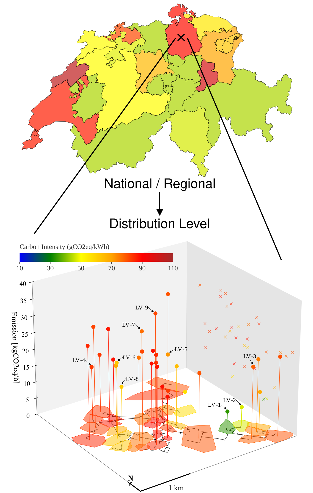
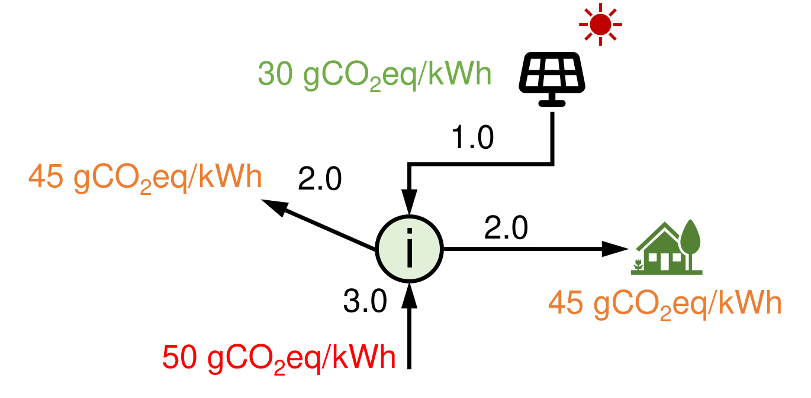
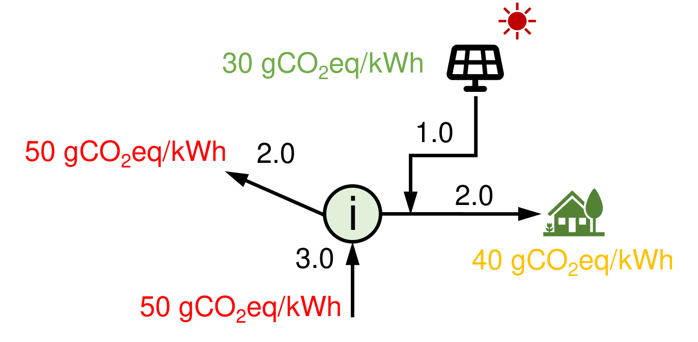
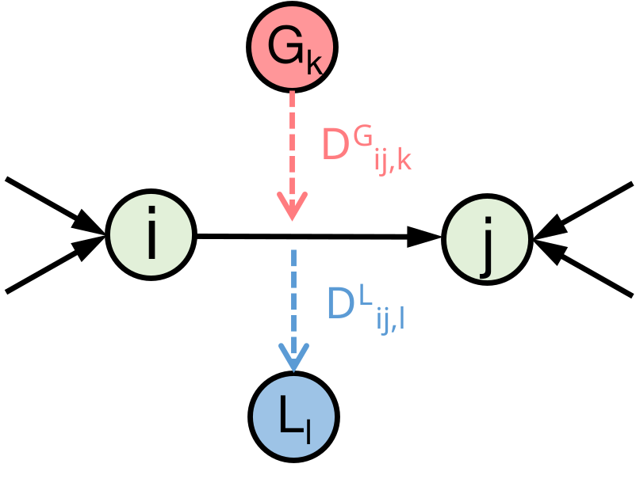
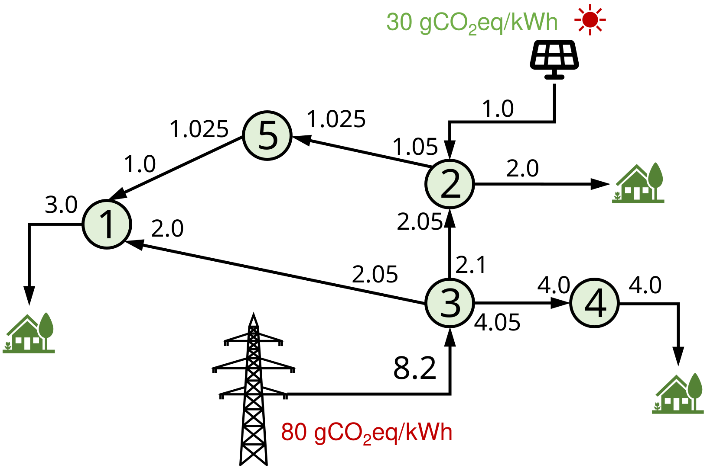
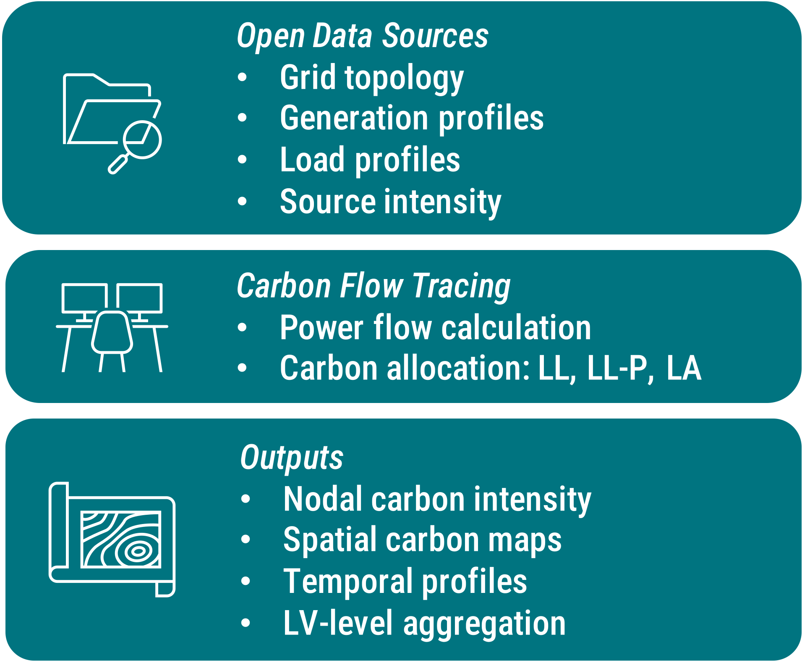

Carbon Flow Tracing in Distribution Grids
From Method to Application
Background and Motivation
Carbon-Aware Energy Transition
Achieving climate targets requires not only reducing emissions, but also understanding where and when emissions occur within increasingly decentralized electricity systems.
Active Distribution Grids
The rapid growth of PV, batteries, EVs, and prosumers introduces bidirectional and highly dynamic power flows, making carbon attribution at the distribution level increasingly important.
Limitations of Existing Carbon Accounting
Most existing approaches rely on regional average emission factors, or transmission-level flow tracing, which cannot capture nodal-level spatial and temporal variations in MV–LV networks.
Need for Practical Distribution-Level Frameworks
A practical framework is needed to integrate open distribution-grid data, allocate carbon responsibility consistently and support carbon-aware analysis for operators, communities and prosumers.

Methodology: Lossless Carbon Allocation without prosumer priority (LL method)
Nomenclature
- Inputs
- node set and branch set: \(\mathcal{N}, \mathcal{L}\)
- generation, load, import, and export power at node \(i\): \(g_i, l_i, m_i, x_i\)
- power inflow to node \(j\) from \(i\): \(F_{i\rightarrow j}^\text{in}\)
- power outflow from node \(i\) in direction of \(j\): \(F_{i\rightarrow j}^\text{out}\)
- injected and imported (from higher-level grids) carbon intensity: \({c_g}_i, {c_m}_i\)
- Outputs: nodal carbon intensity: \({c_x}_i\)
Core Assumptions
- Perfect mixing at each node
- Carbon follows active power flows, intensity inherited from upstream sources
Net power injection and extraction: \[ \begin{cases} p_i^\text{in} &= \max{ \{(g_i - l_i),0 \}} + m_i\\ p_i^\text{out} &= \max{ \{-(g_i - l_i),0 \}} + x_i \end{cases} \]
Nodal power balance (Hörsch et al., 2018): \[ p_i^\text{in} + \sum_{(i,j)\in\mathcal{L}} F_{j\rightarrow i}^\text{in} = p_i^\text{out} + \sum_{(i,j)\in\mathcal{L}} F_{i\rightarrow j}^\text{out} \]

Nodal carbon balance (average participation assumption): \[ g_i {c_g}_i + m_i {c_m}_i + \sum_{j} F_{j\rightarrow i}^\text{in}{c_x}_j = (l_i +x_i){c_x}_i + \sum_{j} F_{i\rightarrow j}^\text{out}{c_x}_i \label{eq:nodal-carbon-balance} \]
The \(\bf{c_x}\) values are given the following linear program: \[ \begin{aligned} \min_{\rm{\bf{c_x}}\in\mathbb{R}_+^n}\quad & \rm{\bf{g}}^\top \rm{\bf{c_g}}+ \rm{\bf{m}}^\top \rm{\bf{c_m}} -(\rm{\bf{l}}+\rm{\bf{x}})^\top \rm{\bf{c_x}}\\ \text{s.t.}\quad &\forall\ i\in \mathcal{N}\\ &0 \leq {c_x}_i\leq\max\{{c_g}_i, {c_m}_i\}\\ & g_i {c_g}_i + m_i {c_m}_i + \sum_{j} F_{j\rightarrow i}^\text{in}{c_x}_j \geq (l_i +x_i){c_x}_i + \sum_{j} F_{i\rightarrow j}^\text{out}{c_x}_i \end{aligned}\label{eq:LP} \]
The carbon emission responsibility of load at node \(i\): \({C\!F_x}_i = l_i{c_x}_i \label{eq:carbon-emission-LL}\)
Methodology: Lossless Carbon Allocation with prosumer priority (LL-P method)
Nomenclature
- Inputs
- node set and branch set: \(\mathcal{N}, \mathcal{L}\)
- generation, load, import, and export power at node \(i\): \(g_i, l_i, m_i, x_i\)
- power inflow to node \(j\) from \(i\): \(F_{i\rightarrow j}^\text{in}\)
- power outflow from node \(i\) in direction of \(j\): \(F_{i\rightarrow j}^\text{out}\)
- injected and imported (from higher-level grids) carbon intensity: \({c_g}_i, {c_m}_i\)
- Outputs: nodal carbon intensity: \({c_x}_i\), ejected carbon intensity: \({c_o}_i\) (by LL-P)
Core Assumptions
- Perfect mixing at each node
- Carbon follows active power flows, intensity inherited from upstream sources
Net power injection and extraction: \[ \begin{cases} p_i^\text{in} &= \max{ \{(g_i - l_i),0 \}} + m_i\\ p_i^\text{out} &= \max{ \{-(g_i - l_i),0 \}} + x_i \end{cases} \]
Nodal power balance (Hörsch et al., 2018): \[ p_i^\text{in} + \sum_{(i,j)\in\mathcal{L}} F_{j\rightarrow i}^\text{in} = p_i^\text{out} + \sum_{(i,j)\in\mathcal{L}} F_{i\rightarrow j}^\text{out} \]

Introduce ejected carbon intensity \({c_o}_i\) to isolate the responsibility of prosumers:
- Local RES generation is prioritized for local consumption before exports
\[ \begin{aligned} \min_{\rm{\bf{c_x,c_o}}\in\mathbb{R}_+^n}\quad & \rm{\bf{g^\top c_g+ m^\top c_m -(l+x)^\top c_o}}\\ \text{s.t.}\quad &\forall\ i\in \mathcal{N}, \quad 0 \leq {c_x}_i\leq\max\{{c_g}_i, {c_m}_i\}\\ & \begin{cases} (l_i+x_i)\cdot {c_o}_i= p_i^\text{out}{c_x}_i + \min\{g_i,l_i \}\cdot {c_g}_i \quad &\text{if}~l_i+x_i>0,\\ {c_o}_i = {c_x}_i \quad &\text{else}. \end{cases}\\ & \max\{{(g_i-l_i),0}\}\cdot{c_g}_i + m_i {c_m}_i + \sum_{j} F_{j\rightarrow i}^\text{in}{c_x}_j \\ & \qquad \geq p_i^\text{out}{c_x}_i + \sum_{j} F_{i\rightarrow j}^\text{out}{c_x}_i \end{aligned} \]
The carbon flow extracted from the network at node \(i\): \({C\!F_x}_i = p_i^\text{out}{c_x}_i\)
The carbon emission responsibility of load at node \(i\): \({C\!F_o}_i = l_i{c_o}_i\)
Methodology: Carbon Allocation with Losses (LA method)
Key Idea: Network active power losses also carry carbon responsibility.
Principle: Branch losses inherit the carbon intensity of transmitted electricity.
Nomenclature
- Additional Inputs
- topological generation and load distribution factors: \(\mathbf{D}^\mathrm{\scriptscriptstyle G}\), \(\mathbf{D}^\mathrm{\scriptscriptstyle L}\)
- generalized generation power: \(\rm{\bf{P}}^\mathrm{\scriptscriptstyle G} = \max\{(\rm{\bf{g+m - l-x), 0}}\}\)
- generalized load power: \(\rm{\bf{P}}^\mathrm{\scriptscriptstyle L} = \max\{\rm{\bf{(l+x-g-m), 0}}\}\)
Core Assumptions
- Perfect mixing at each node
- Carbon follows active power flows, intensity inherited from upstream sources
- Losses along a branch have the same carbon intensity as the electricity it carries
- Carbon responsibility of losses is allocated to loads based on their contribution to the branch flow
Upstream and Downstream Looking approaches for allocating losses (Bialek, 1997)
- \(\mathbf{D}^\mathrm{\scriptscriptstyle G}_{ij,k}\): the share of power from generator \(k\) to branch flow from node \(i\) to node \(j\).
- \(\mathbf{D}^\mathrm{\scriptscriptstyle L}_{ij,l}\): the share of power from load \(l\) to branch flow from node \(i\) to node \(j\).
Using \(\mathbf{D}^\mathrm{\scriptscriptstyle G}\) and \(\mathbf{D}^\mathrm{\scriptscriptstyle L}\), we can allocate the emissions associated with network losses to generators and loads, respectively.

With upstream decomposition, the branch carbon flows: \[ C\!F^\text{from}_{ij} = \sum_{k\in\mathcal{N}_\mathrm{\scriptscriptstyle G}} D^\mathrm{\scriptscriptstyle G}_{ij,k}\cdot{P_k^\mathrm{\scriptscriptstyle G}}\cdot C\!I^\mathrm{\scriptscriptstyle G}_k \label{eq:branch-carbon-flow-generation} \]
The branch carbon intensity: \[ C\!I_{ij} = \frac{C\!F^\text{from}_{ij}}{F_{ij}} \label{eq:branch-carbon-intensity} \]
Methodology: Carbon Allocation with Losses (LA method, Cont’d)
Key Idea: Network active power losses also carry carbon responsibility.
Principle: Branch losses inherit the carbon intensity of transmitted electricity.
Nomenclature
- Additional Inputs
- topological generation and load distribution factors: \(\mathbf{D}^\mathrm{\scriptscriptstyle G}\), \(\mathbf{D}^\mathrm{\scriptscriptstyle L}\)
- generalized generation power: \(\rm{\bf{P}}^\mathrm{\scriptscriptstyle G} = \max\{(\rm{\bf{g+m - l-x), 0}}\}\)
- generalized load power: \(\rm{\bf{P}}^\mathrm{\scriptscriptstyle L} = \max\{\rm{\bf{(l+x-g-m), 0}}\}\)
Core Assumptions
- Perfect mixing at each node
- Carbon follows active power flows, intensity inherited from upstream sources
- Losses along a branch have the same carbon intensity as the electricity it carries
- Carbon responsibility of losses is allocated to loads based on their contribution to the branch flow
Upstream and Downstream Looking approaches for allocating losses (Bialek, 1997)
- \(\mathbf{D}^\mathrm{\scriptscriptstyle G}_{ij,k}\): the share of power from generator \(k\) to branch flow from node \(i\) to node \(j\).
- \(\mathbf{D}^\mathrm{\scriptscriptstyle L}_{ij,l}\): the share of power from load \(l\) to branch flow from node \(i\) to node \(j\).
Using \(\mathbf{D}^\mathrm{\scriptscriptstyle G}\) and \(\mathbf{D}^\mathrm{\scriptscriptstyle L}\), we can allocate the emissions associated with network losses to generators and loads, respectively.
Downstream-looking gives the contribution of the load in node \(k\) to the losses occurring in the branch going from node \(i\) to \(j\): \[ Contri_{ij,k} = \frac{D^\mathrm{\scriptscriptstyle L}_{ij,k}\cdot{P^\mathrm{\scriptscriptstyle L}_{k}}}{F_{ij}} \label{eq:load-contribution-to-losses} \]
Allocated carbon from losses to node \(k\): \[ Surcharge_k = \sum_i\sum_j Contri_{ij,k} \cdot Losses_{ij}\cdot C\!I_{ij} \] \[ Losses_{ij} = F_{ij}+F_{ji} \]
The carbon flow injected to the network at node \(i\) without considering losses: \[ {\hat{C\!F_x}}_i = \sum_j F_{ij}\cdot C\!I_{ij} \] Add surcharges: \[ {C\!F_x}_i = \begin{cases} {\hat{C\!F_x}}_i + Surcharge_i\quad &\text{for}\quad i\in\mathcal{N}_\mathrm{\scriptscriptstyle L}\\ {\hat{C\!F_x}}_i &\text{for}\quad i\in\mathcal{N}_\mathrm{\scriptscriptstyle G} \end{cases} \]
The intensity is given by
\[ {C\!F_x}_i = (P^\mathrm{\scriptscriptstyle G}_i - P^\mathrm{\scriptscriptstyle L}_i){c_x}_i \]
Case Study: 5-node Network
- Node 1 and 4: consumers with associated loads.
- Node 2: a prosumer with PV installation.
- Node 3: imports electricity from higher-level grids.
- Node 5: an interconnected transfer node.

Case Study: Synthetic Swiss Distribution Grid - Topology
Case Study: Synthetic Swiss Distribution Grid - Source Intensity
Generation Plants
| Category | Number | Total capacity [MW] | Carbon intensity [gCO2eq/kWh] |
|---|---|---|---|
| Photovoltaic | 226268 | 5391.0 | 30 |
| Hydroelectric | 990 | 13979.1 | 24 |
| Biomass | 327 | 151.1 | 230 |
| Natural gas | 117 | 266.3 | 528 |
| Wind | 43 | 77.47 | 11 |
| Waste | 18 | 220.8 | 580 |
| Nuclear | 4 | 3014.6 | 12 |
| Crude oil | 1 | 0.0053 | 650 |
Transmission-Level Carbon Signals
Emissium provides the dynamic carbon intensity at the transmission level in Switzerland:
- Cantonal-level geographical granularity
- Hourly temporal resolution
Case Study: Synthetic Swiss Distribution Grid - Generation and Load Profiles
Generation Profiles
PV Generation Model: Weather Data + Roof Info
- A high fidelity PV generation model that accounts for the inclination and orientation of the PV panels (Jensen et al., 2023)
- Irradiance data from (Zippenfenig, 2024)
\[ P_\text{dc} = \frac{I_\text{tilt}}{1000} P_\text{rated} ( 1 + \gamma_\text{pdc} (T_\text{cell} - T_\text{ref})) \]
\[ I_\text{tilt} = \mathrm{DNI} \cdot \cos\theta + \mathrm{DHI} \cdot \left(\frac{1 + \cos\beta}{2}\right) + \mathrm{GHI} \cdot \rho \cdot \left(\frac{1 - \cos\beta}{2}\right) \label{eq:tilt-irradiance} \]
Other Generation Models
A simple flat generation profile for other types of generators due to the limited connection in the Swiss distribution grid
Load Profiles
BDEW electricity demand profiles (Amedeo et al., 2017) + land use data (Swiss Land Use Statistics, 2024)
Match the load profiles to the load nodes based on the land use type of the node’s location
Examples:
- Residential areas (1 or 2-family houses): BDEW type H0 (Households)
- Agricultural buildings and surroundings: BDEW type L0 (General farms)
- Public buildings and surroundings: BDEW type G1 (Business on weekdays 8am - 6pm)
Case Study: Synthetic Swiss Distribution Grid - Carbon Flow Tracing Results
Case Study: Synthetic Swiss Distribution Grid - Carbon Flow Tracing Results (Cont’d)
Temporal Variability
Computational Performance
| Metric | LL | LL-P | LA | LA (Numba) |
|---|---|---|---|---|
| Runtime [s] | 1.0 | 1.0 | 198 | 9.9 |
| Peak memory [MB] | 310 | 310 | 1162 | 715 |
Seasonal Variability
Open Source Package: cflowdist
The proposed framework is being released as the open-source Python package cflowdist for synthetic MV–LV distribution grids in Switzerland:
- open geospatial, infrastructure and meteorological data integration,
- power flow calculation (empowered by
 ),
), - time-series computation,
- multiple carbon allocation schemes (LL, LL-P, LA),
- and built-in visualization tools.
# Import and initialize the tracer
import cflowdist as cfd
tracer = cfd.CarbonTracer(address = '8305 Dietlikon')
# Set snapshots
t_start = '2023-06-01 00:00:00'
t_end = '2023-06-30 23:00:00'
snapshots = tracer.set_snapshots(t_start=t_start, t_end=t_end)
# Run power flow
tracer.power_flow()
# Run carbon allocation (LL-P method)
ci = tracer.allocate_carbon(
loss_allocation=False,
self_consumption=True
)
# Visualization
tracer.network_carbon_plot(snapshot = snapshots[12])
Conclusion and Future Work
Key Takeaways
- Developed a unified framework for carbon flow tracing in MV–LV distribution grids, including:
- lossless allocation (LL),
- lossless prosumer-priority allocation (LL-P),
- and losses-inclusive allocation (LA).
- Applied the framework to a synthetic Swiss distribution grid, revealing significant spatial and temporal variations in carbon intensity at the LV level that cannot be captured using conventional regional-average approaches.
- Released the framework as the open-source Python package
cflowdist, supporting reproducible research and practical applications in distribution-level carbon accounting.
Future Directions
- Incorporate:
- battery energy storage systems (ongoing work)
- Extend the framework to:
- losses due to reactive power flows
- near real-time carbon signals
- Explore applications in:
- carbon-aware energy management
- local energy community operations
- distribution-system planning
References
Thank you for your attention !

Carbon Flow Tracing in Distribution Grids: From Method to Application
Wenyu Liu, Enea Figini, Mario Paolone